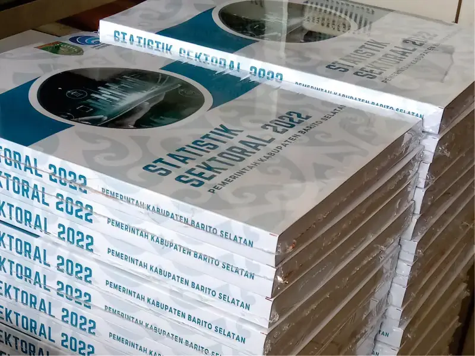

Layanan Yh'rez Grafika
Jilid Softcover (Lem Panas) Profesional
Solusi Cetak Laporan Instansi & Organisasi Terpercaya
Pastikan dokumen laporan Anda tampil prestisius dan tahan lama dengan Jilid Softcover Premium dari Yh'rez Grafika. Kami menggunakan teknik jilid lem panas (perfect binding) standar penerbit untuk menghasilkan buku yang kokoh, rapi, dan sangat profesional.
- Standar Instansi & Organisasi: Pilihan utama untuk jilid Laporan Akhir Tahunan, Buku Statistik Sektoral, modul kedinasan, hingga laporan pertanggungjawaban (LPJ) organisasi.
- Teknologi Perfect Binding: Lem panas yang sangat kuat memastikan setiap lembar kertas menempel sempurna pada punggung buku, sehingga tidak mudah lepas meski buku sering dibuka.
- Finishing Mewah: Dilengkapi dengan cover custom (cetak warna tajam) dan opsi laminasi Glossy (mengkilap) atau Doff (elegan) untuk perlindungan ekstra terhadap air dan debu.
- Pengerjaan Massal & Cepat: Didukung mesin modern, kami siap melayani cetak dan jilid dalam jumlah besar dengan waktu pengerjaan yang tepat waktu sesuai tenggat (deadline) Anda.
- Desain Punggung Buku: Memungkinkan penulisan judul di bagian samping buku (punggung), memudahkan pencarian saat laporan disimpan di rak arsip.
Daftar Harga Jilid Softcover
Mulai dari Rp 25.000
| Jenis / Qty | Harga Satuan | Estimasi |
|---|---|---|
| Jilid A4 (Satuan) | Rp 25.000 | [Isi Manual] Hari |
| Jilid F4 (Satuan) | Rp 28.000 | [Isi Manual] Hari |
| Grosir (>50 Buku) | Rp [Isi Manual] | [Isi Manual] Hari |
Silahkan konsultasi terlebih dahulu untuk pemesanan anda.